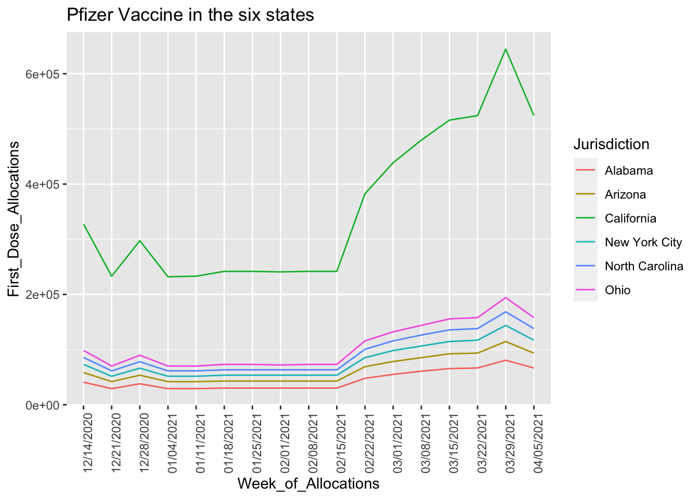
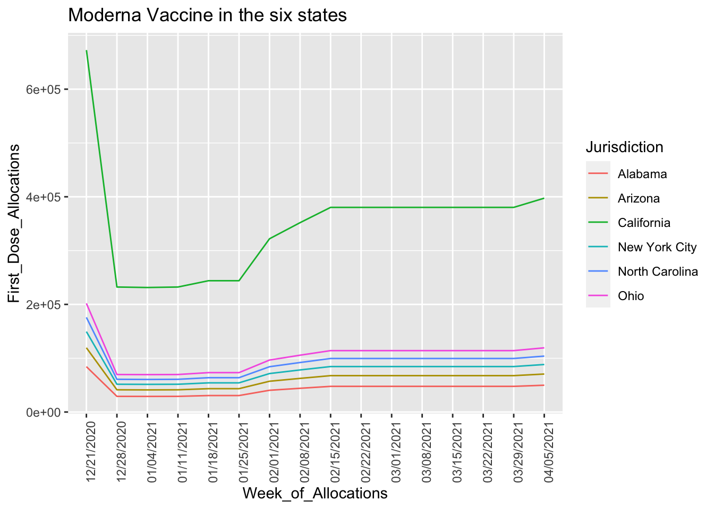
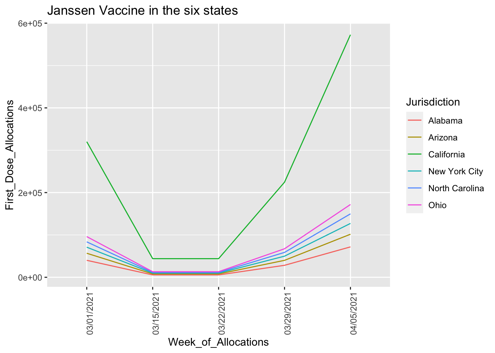
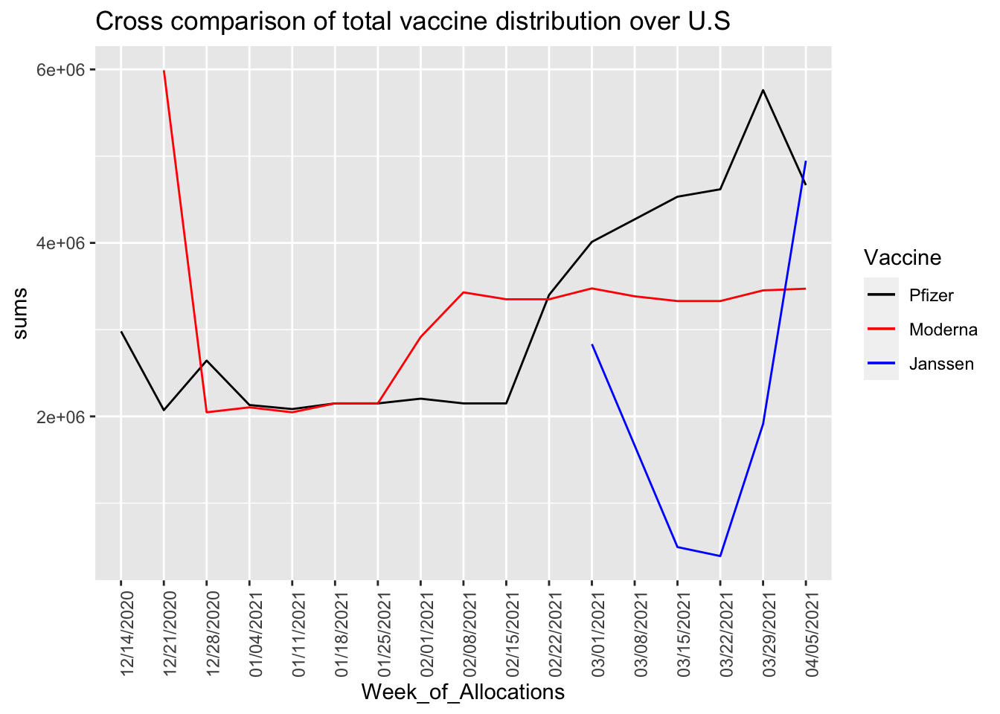

Chapter 12 Results
pfizer <- readr::read_csv("COVID-19_Vaccine_Distribution_Allocations_by_Jurisdiction_-_Pfizer.csv")
moderna <- readr::read_csv("COVID-19_Vaccine_Distribution_Allocations_by_Jurisdiction_-_Moderna.csv")
janssen <- readr::read_csv("COVID-19_Vaccine_Distribution_Allocations_by_Jurisdiction_-_Janssen.csv")
pfizer = filter(pfizer, Week_of_Allocations != "04/12/2021")
moderna = filter(moderna, Week_of_Allocations != "04/12/2021")
janssen = filter(janssen, Week_of_Allocations != "04/12/2021")city <- c("New York City", "California", "Alabama", "Arizona", "North Carolina", "Ohio")
new_pfizer <- subset(pfizer, Jurisdiction %in% city )
new_moderna <- subset(moderna, Jurisdiction %in% city )
new_janssen <- subset(janssen, Jurisdiction %in% city)pfizer_weeks <- unique(new_pfizer$Week_of_Allocations)
pfizer_weeks <- rev(pfizer_weeks)
new_pfizer$Week_of_Allocations = factor(new_pfizer$Week_of_Allocations, levels = pfizer_weeks)
moderna_weeks <- unique(new_moderna$Week_of_Allocations)
moderna_weeks <- rev(moderna_weeks)
new_moderna$Week_of_Allocations = factor(new_moderna$Week_of_Allocations, levels = moderna_weeks)
janssen_weeks <- unique(new_janssen$Week_of_Allocations)
janssen_weeks <- rev(janssen_weeks)
new_janssen$Week_of_Allocations = factor(new_janssen$Week_of_Allocations, levels = janssen_weeks)Since seeing a graph of a vaccine’s distribution in all jurisdictions would be time-consuming and untidy, we pick out six jurisdictions to compare: New York City and California represent big-city jurisdictions, Alabama and Arizona represent non-urban jurisdictions, North Carolina and Ohio represent jurisdictions in between big-city and non-urban.
First, Let’s look at the most well-known Pfizer Vaccine:
ggplot(data = new_pfizer, aes(x=Week_of_Allocations, y=First_Dose_Allocations, group = Jurisdiction, color = Jurisdiction
)) + theme(axis.text.x = element_text(angle = 90, hjust = 1)) + geom_line() + ggtitle("Pfizer Vaccine in the six states") Pfizer vaccine is the first vaccine that was put to use (President Joe Biden also used this vaccine). From the graph, we can see that the trends of distribution of Pfizer Vaccine appear similarly in the six states. We see an increase of doses after the week 02/15/2021. This is because we see a significant increase of vaccine production at that period. The distribution of Pfizer has been increasing until last week, where we see a drop in doses.
Next is the Moderna Vaccine:
ggplot(data = new_moderna, aes(x=Week_of_Allocations, y=First_Dose_Allocations, group = Jurisdiction, color = Jurisdiction
)) + theme(axis.text.x = element_text(angle = 90, hjust = 1)) + geom_line() + ggtitle("Moderna Vaccine in the six states")
Moderna vaccine was put to use a week after Pfizer Vaccine. We see that the pattern is similar across six jurisdictions. The trend is very steady, with an increase at the week 01/25/2021, and then maintain flat after 02/15/2021.
At last we look at Janssen Vaccine:
ggplot(data = new_janssen, aes(x=Week_of_Allocations, y=First_Dose_Allocations, group = Jurisdiction, color = Jurisdiction
)) + theme(axis.text.x = element_text(angle = 90, hjust = 1)) + geom_line() + ggtitle("Janssen Vaccine in the six states")
Janssen Vaccine by Johnson&Johnson was put to use late February 2021. We see a huge increase of Janssen vaccine after it was put to use. The advantage of this vaccine compared to the others is: Janssen vaccine is easy to store (at refrigerator temperature), and it only requires a single shot. Therefore, it is getting more and more welcomed in U.S. Despite its low overall-efficacy, Jassen is found to be protective against new COVID variants. This is another reason why it’s popular.
pfizer_all <- pfizer
pfizer_all <- pfizer_all %>%
group_by(Week_of_Allocations) %>%
summarize(sums = sum(First_Dose_Allocations))
pfizer_all$Week_of_Allocations = factor(pfizer_all$Week_of_Allocations, levels = pfizer_weeks)
moderna_all <- moderna
moderna_all$Week_of_Allocations = factor(moderna_all$Week_of_Allocations, levels = moderna_weeks)
moderna_all <- moderna_all %>%
group_by(Week_of_Allocations) %>%
summarize(sums = sum(First_Dose_Allocations))
janssen_all <- janssen
janssen_all$Week_of_Allocations = factor(janssen_all$Week_of_Allocations, levels = janssen_weeks)
janssen_all <- janssen_all %>%
group_by(Week_of_Allocations) %>%
summarize(sums = sum(First_Dose_Allocations))We then plot the total distributions of the three vaccines across the country:
ggplot()+ theme(axis.text.x = element_text(angle = 90, hjust = 1)) + geom_line(data = pfizer_all,aes(x=Week_of_Allocations, y=sums, group=1, color = "black")) + geom_line(data = moderna_all, aes(x=Week_of_Allocations, y=sums, group=1, color = "red")) + geom_line(data = janssen_all, aes(x=Week_of_Allocations, y=sums, group=1 , color = "blue")) + ggtitle("Cross comparison of total vaccine distribution over U.S") + scale_color_identity(name = "Vaccine",
breaks = c("black", "red", "blue"),
labels = c("Pfizer", "Moderna", "Janssen"),
guide = "legend") We see that the distributions of the two traditional vaccines (Pfizer and Moderna) have been steadily growing, and the new vaccine Janssen has become more and more popular in the past month. By the end of last week, we can see that the three vaccines are somewhat equally popular across the country.